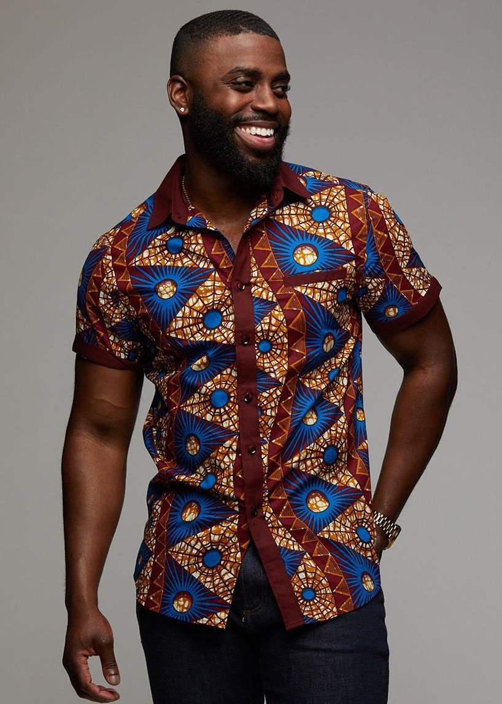

BLOGASAURUS:GHANA🇬ðŸ‡
About Ghana

Ghana is right at the center of the world, being both incredibly close to the equator and on the line representing 0° longitude. Ghana means Warrior-King in the Soninke language.The Capital of Ghana is Accra. On a world map you’ll find it on the west coast of Africa – the side closest to America, and bordering the Atlantic Ocean. Follow the western coast of Africa until it curves inwards and you’ll have located the Gulf of Guinea. Its culture and traditions are vibrant and rich. The people are warm, welcoming, and friendly. In Ghanaian society, it is traditional to take life at a relaxed pace and view time as a series of events rather than a matter of hours or minutes.
Traditions/Cultures
Languages
There are more than 250 languages and dialects spoken in Ghana. English is the official language in Ghana. Some examples of languages spoken in Ghana are:
- Akan(Ashanti and Fanti)
- Ewe
- Dagbani
- Dangme
- Dangaare
- Ga
- Gonja
- Nzema
- Hausa
Fashion
Ghana fashion is very Bold yet subtle. The designs on the fabrics are traditional while having a sheek and meaningful insight behind it. These are images of traditional wear that many ghanians and people around the globe like to wear. The Kente cloth is an Akan royal cloth worn onky on important days such as a wedding. Ankara is also a print which depicts tribal-like patterns and motifs. It is worn for regular ocasions, however others choose to wear it for special occassions such as parties, etc.
Places to Visit
These are examples of places to visit while in Ghana. The kakum national park is an amusement park for families much like the Bronx Zoo. It has variety of different activities families can participate in while learning. The Cape Coast Castle is a museum of the trans-Atlantic Slave trade. It was built by European traders. It was originally a Portuguese trading post. However prior to to it being a trade post, the Swedish Africa Company constructed timber there which later became the center of trade on timber and gold.
To see more sites of attractions in Ghana click this video here
- Kumasi
- Mole National Park
- Labardi Beach
- Akosombo
- Elmina
About the Author
My name is Richlove Nkansah. I am 15 years old. I attend Bronx Health Sciences. I lived in Ghana for 8 years. While I was in Ghana I attended St. Louis Jubilee School. It has beautiful landscapes such as the Akosombo Dam, Lake Volta, and Labardi Beach. Some of my favorite places to visit while I was in Ghana was Kejetia. I loved this market place because it is a mixture of variety of dfferent foods from different cultures and traditions. I am excited to tell you all about my country and places to consider visiting when you visit Ghana.
This is an email link to contact me Send Mail